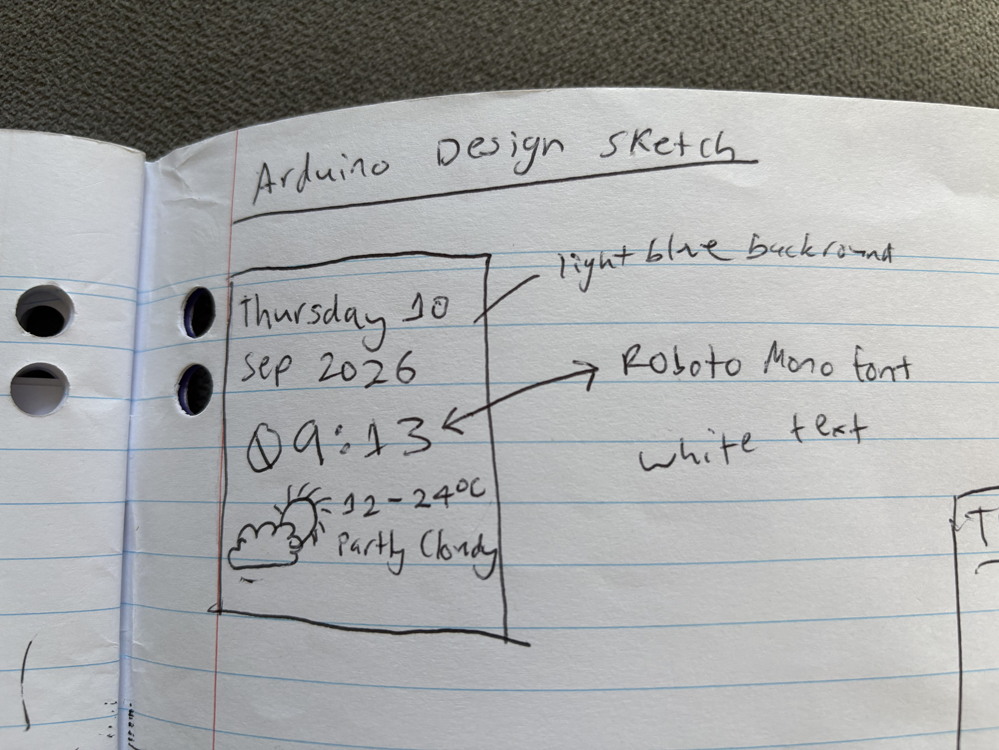

Project 3: Arduino Clock
Reflection
This term, we have spent time learning about control technologies, including many concepts and systems like input-process-output models, micro controllers and Arduinos.
Our common task was to design a layout for an Arduino Uno LCD that included the date, time and weather using both python and arduino code. When starting off this project, I sketched out wireframes of a few ideas of my layout before landing on this one:

Reflection-Design Timeline
I started the code with the basics that we had learnt prior, and then experimented with the positioning,
size and font of the time, day and date, before finally landing on my final design. Then I changed the
colour of the text and background until I liked how it looked.
While Mr Lo Russo was absent, Max and I experimented using google gemini AI to add extra things in a
copy of my main file, and we added swimming fish that ate the text on screen, code that replaced the
text after 3 seconds and an ocean theme. This was not used in my actual common task design, but it was
further experimentation with the code and concepts.
Back in my proper code files, I used the tutorial sheet on the google classroom to set up the
functioning temperature connection from my computer to the Arduino display. In our last in class lesson
I was present for, we had a substitute teacher and I experienced issues with getting my LCD to
communicate properly with the meteorg and my computer, and I wasn’t able to solve it on my own.
Summary:
I successfully compiled my knowledge to create a functioning clock using the skills that we learned this
term, and managed to learn how to add the weather without the help of a teacher. I customised my design
to match my wireframe as best I could.
I found it difficult to persist when issues came up with my code or the programs, but I managed with the
help of Max and Mr Lo Russo to complete the majority of the task. At the end of the task, I needed help
to figure out how to solve the connection problem with my Arduino, but Mr Lo Russo was absent for a few
lessons, and then I was absent for a few lessons, which prevented me from fixing it.
I learnt how to code an Arduino, how to write and use python script, how to use AI to be more creative,
how to overcome smaller issues while working, and how to complete tasks without help from a teacher.
Due to being absent I do not have a photo of my functioning LCD